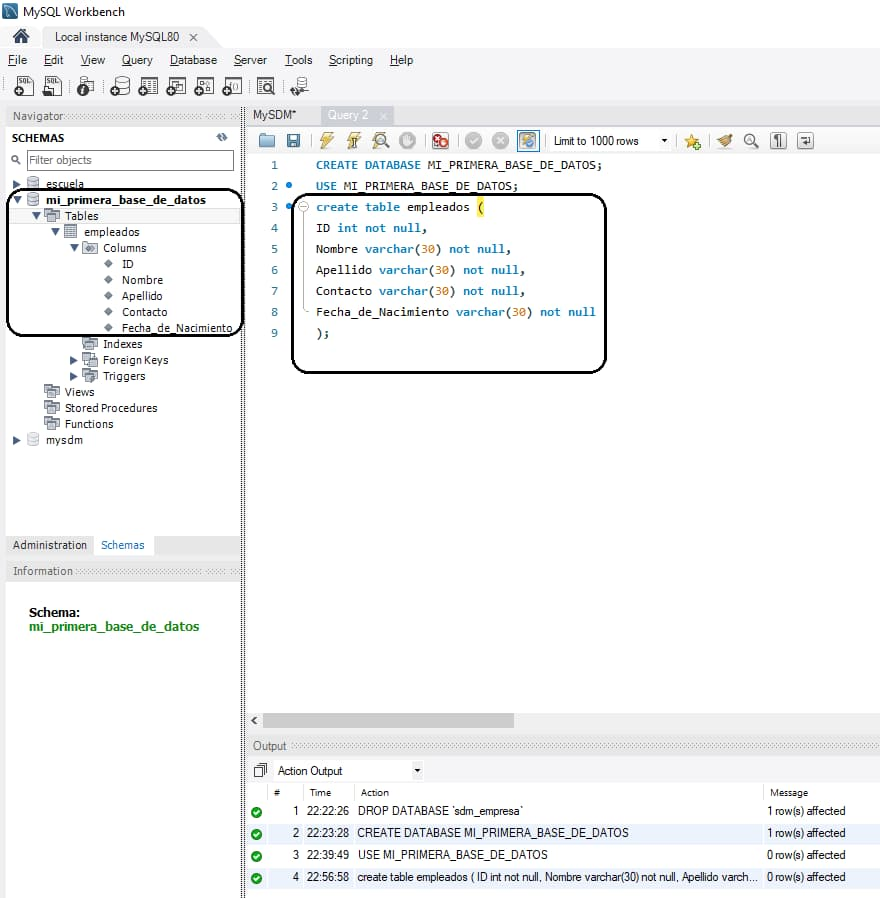

Como crear una Base de Datos con MySQL con codigos
Ante de crear una base de dato debe de saber que una base de datos se encarga no solo de almacenar datos, sino también de conectarlos entre sí en una unidad lógica.
Saludos, mi nombre es Sebastian de Jesus Montero, en esta pagina le muestro como crear una base de dato en MySQL, obviamente despues de haber instalado el programa y lo necesario para poder ejecutar codigo en MySQL simplemente tiene que escribir el siguiente codigo:
Create Database MI_PRIMERA_BASE_DE_DATOS (Aqui debes de poner el nombre como quiere que se llame la base da dato).
Ejemplo para crear una base de dato
create database MI_PRIMERA_BASE_DE_DATOS;
Y listo, si asi es, eso es todo asi se crea una base de dato, ya tiene una base de dato llamada MI_PRIMERA_BASE_DE_DATOS, ahora simplemente te faltaria crear las tablas (Registro).
Pero ante de crear las tablas debes de colocar el codigo (use MI_PRIMERA_BASE_DE_DATOS;) eso es para que se selecione la base da dato llamada MI_PRIMERA_BASE_DE_DATOS y que los siguientes codigos se guarden y se ejecuten en dicha base de dato.
Como crear una tabla en MySQL con codigo
Para crear una tabla en MySQL simplemente debe escribir el comando (create table) y al lado escribir el nombre que desea que tenga esa tabla y listo, simplemente te faltaria colocarle los campos a llenar.
Ejemplo de como realizar una tabla en MySQL
create table empleados (
ID int not null,
Nombre varchar(30) not null,
Apellido varchar(30) not null,
Contacto varchar(30) not null,
Fecha_de_Nacimiento varchar(30) not null);

Como pueden ver en la imagen de arriba las palabras ID, Nombre, Apellido etc. esas son variables y las letras que le siguien son los codigos (propiedades) que definen que funcion realizara cada una de la variables.
Ejemplo: El ID tendra numero enteros porque la propiedad int me esta indicando que solo acepta numero enteros y la variable Nombre con VARCHAR(30) me indica que aceptara letras, numero y caracteres, un maximo de 30 letras.
Y listo asi de simple es crear una tabla en MySQL, el codigo anterior dice que tenemos una tabla llamda empleados que dentro tendra unas casilla para llenar llamda ID, otra llamda Nombre otra Apellido otra Contacto y por ultimo una llamda Fecha_de_Nacimiento si se fijan Fecha_de_Nacimiento lo escribi junto porque no se puede dejar espacio cuando vaya a crear esos campos, porque te dara un error
Tambien indica que la casilla llamda ID se llenara con numeros enteros con el codigo INT y que no se podra dejar sin llenar con el codigo NOT NULL. El codigo VARCHAR(30) indica que se llenara con letrar y numero y el numero que esta entre parentesis indica la cantidad de letra que puede guardar esa casilla.
El punto y como que esta fuera de los parentesis de empleados indica que ahi finaliza esa tabla y que puede seguir con otra si decea.
Ejemplo de una base de dato creada con toda su estructura inicial
create database Empresa_SDM;
use Empresa_SDM;
create table empleados (
ID int not null,
Nombre varchar(30) not null,
Apellido varchar(30) not null,
Contacto varchar(30) not null,
Fecha_de_Nacimiento varchar(30) not null);
Quedaria algo mas o menos asi:
Como relacionar varias tabla en MySQL
Para relacionar dos tablas es simple, imaginemos que tenemos las siguientes dos tablas:
create database Empresa_SDM;
use Empresa_SDM;
create table empleados (
ID int not null primary key,
Nombre varchar(30) not null,
Apellido varchar(30) not null,
Contacto varchar(30) not null,
Fecha_de_Nacimiento varchar(30) not null);
create table DEPARTAMENTO (
ID int not null primary key,
Nombre varchar(30) not null);
Utilizaremos el codigo ALTER que sirve para modificar las tablas y el codigo ADD que sirve para agregarle campos a las tablas.
Despues de tener nuestra dos tabla solo es agregarle a empleado un campo que sera su clave foranea para asi poder entrelazar la tabla 1 con la tabla 2.
Ejemplo:
ALTER TABLE empleados
ADD ID_DEPARTAMENTO INT;
Luego en la misma tabla empleados agregaremos una clausula de restricciones que es CONSTRAINT y siempre de debe poner fk para relacionar las tablas.
Ejemplo:
ALTER TABLE empleados
ADD CONSTRAINT fk_DEPARTAMENTO_empleados
FOREIGN KEY (ID_DEPARTAMENTO) REFERENCES DEPARTAMENTO(ID);
Y por ultimo pero no menos importante seria agregar la llave foranea y la referencia al campo que se vinculara, como se muestra en el codigo de arriba.

Un gusto ayudarlos, me despido de ustedes, Saludos.
SDM